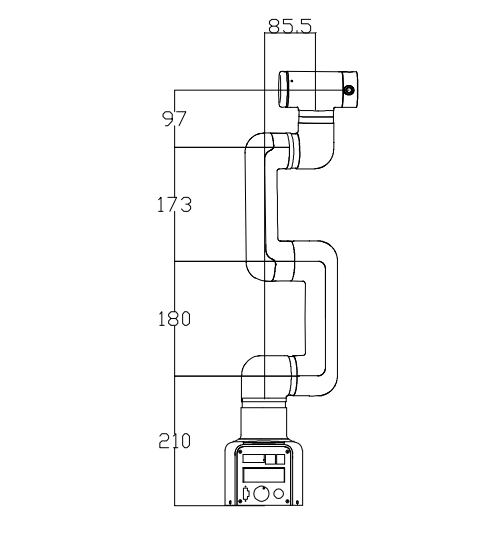

机器人参数说明
第一章中，我们探讨了产品的卖点及其设计理念，为您提供了对产品高层次理解的全景视角。现在，让我们进入第二章——机器人参数说明。这一章节将是您理解产品技术细节的关键。详细了解这些技术参数，不仅可以帮助您充分认识到我们产品的先进性和实用性，而且还能够确保您能够更有效地利用这些技术来满足您的具体需求。
1. 机器人规格参数
| 指标 | 参数 |
|---|---|
| 名称 | 全谐波协作机械臂 |
| 型号 | myCobot Pro 450 |
| 自由度 | 6 |
| 有效负载 | 1 Kg |
| 工作半径 | 450mm |
| 重复定位精度 | ±0.1mm |
| 重量 | <5Kg |
| 电源输入 | 24V，9.2A |
| 工作温度 | 0-45℃ |
| 通信 | TCP/IP-Socket MODBUS Ethernet IP |
2. 结构尺寸参数
！本章以毫米为距离单位，以度为角度单位。
2.1 产品尺寸和工作空间

2.2 关节运动范围
硬件关节运动范围
| 关节 | 范围 |
|---|---|
| J1 | -360 ~ +360 |
| J2 | -135 ~ +135 |
| J3 | -135 ~ +135 |
| J4 | -150 ~ +150 |
| J5 | -360 ~ +360 |
| J6 | -360 ~ +360 |
软件关节运动范围
| 关节 | 范围 |
|---|---|
| J1 | -165 ~ +165 |
| J2 | -120 ~ +120 |
| J3 | -158 ~ +158 |
| J4 | -165 ~ +165 |
| J5 | -165 ~ +165 |
| J6 | -175 ~ +175 |
2.3 孔位安装
- 机器人底座安装法兰，底座同时兼容乐高科技件安装方式和M4螺丝安装方式。

- 机器人末端安装法兰，机械臂末端同时兼容乐高科技件孔与螺丝螺纹孔。

3. 电气特性参数

4. 笛卡尔坐标参数